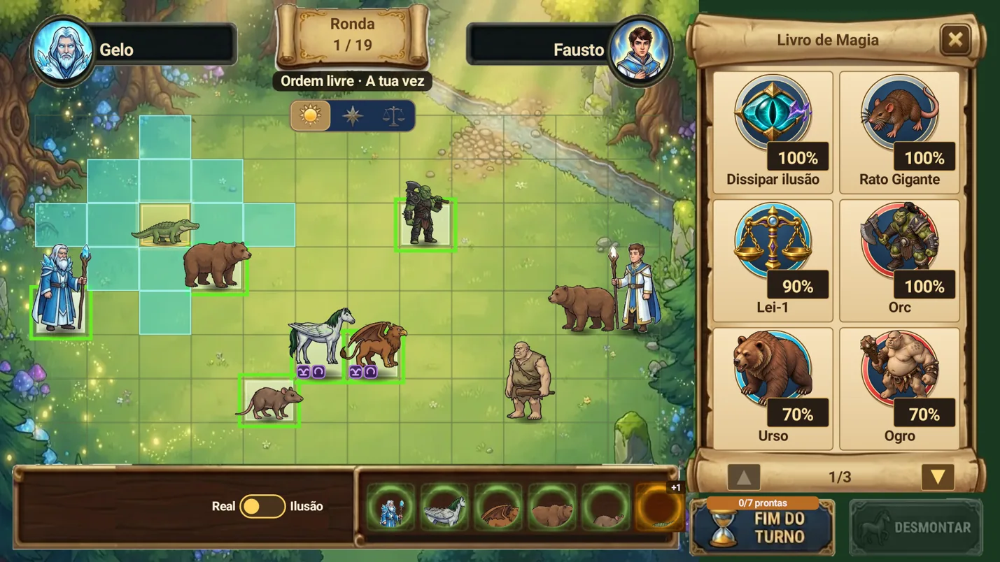
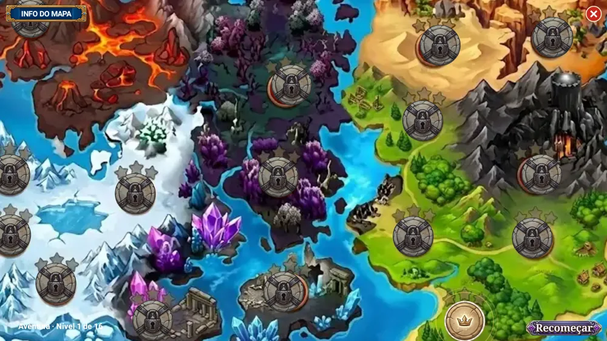
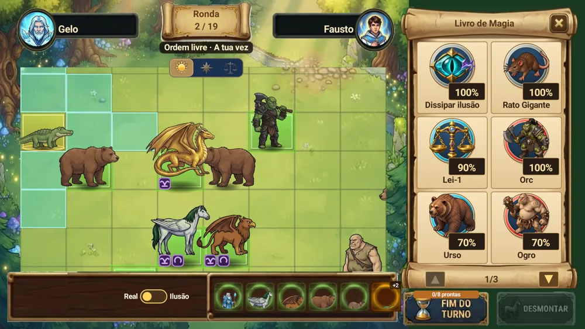

Duelos de magos por turnos
Lê o tabuleiro, posiciona as tuas criaturas e decide quando lançar um feitiço. Cada turno traz uma nova escolha tática.
Almas Dev Studio · Android · Beta fechada
Invoca criaturas, lança feitiços e vence o mago rival com estratégia. Um jogo de fantasia tática inspirado nos duelos de Chaos no ZX Spectrum.

Magia e estratégia
Um tabuleiro de possibilidades, com tempo para pensar antes de cada jogada.
Lê o tabuleiro, posiciona as tuas criaturas e decide quando lançar um feitiço. Cada turno traz uma nova escolha tática.
Constrói o teu plano com os feitiços que tens na mão. Invoca aliados e usa ilusões para enganar o teu rival.
O progresso fica no teu dispositivo. Não precisas de ligação para jogar, não há anúncios nem compras na aplicação.
Capturas reais da beta Android. A interface do jogo apresentada está em português.


Ajuda a melhorar o jogo
Duelo Arcano está em teste fechado na Google Play. Experimenta o jogo, diz-nos o que funciona e ajuda-nos a encontrar erros.
Usa a mesma conta Google no grupo, na página de teste e na Play Store do teu telemóvel.
Primeiro, adere ao grupo Almas Dev Studio Testers no Google Groups.
Entrar no grupoAbre a página de teste e escolhe "Tornar-se um testador".
Abrir a página de testeInstala pela Google Play depois de te inscreveres. Mantém a inscrição no teste e o jogo instalado durante pelo menos 14 dias consecutivos. Joga durante o teste e envia-nos a tua opinião.
É uma beta: podes encontrar erros. As capturas mostram a interface em português; está prevista uma versão do jogo em inglês.
Duelo Arcano
O estúdio
Almas Dev Studio é um estúdio independente português, fundado em 2026. Fazemos jogos de estratégia com raízes nos clássicos - porque os bons jogos não envelhecem.
Estudante de Engenharia Informática. Responsável pelo código, pela lógica do jogo e pela magia que faz tudo funcionar.
Técnico de informática reformado, a viajar pela Ásia. Desenha o jogo, testa, decide e conta as histórias das viagens no canal AlmasAdventures.com
Envia a tua opinião à Almas Dev Studio.